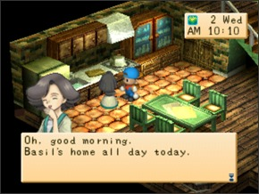

ANNA  Anna é casada com Basil neste jogo e ela é a mãe de Mary. Ela é gentil e uma pessoa de classe. Sua família se mudou para o vilarejo da cidade poucos anos atrás. Se você plantar mais de +90 de qualquer flor ou combinação de flores em sua fazenda ela virá, levará todas as flores e dara a você uma Power Berry Aniversário: 22 de outono CRONOGRAMA Dia Hora Local Todo dia exceto segunda 6:00am a 1:00pm Dentro de sua casa Todo dia exceto segunda 2:00pm a 4:00pm Na Praça da Cidade Todo dia exceto segunda 5:00pm a 12:00am Dentro de sua casa Todo dia exceto segunda (Se está chovendo) Todo dia Dentro de sua casa Segunda-feira 6:00am a 7:00pm Dentro de sua casa Segunda-feira 8:30am a 10:00am Na Colina Mãe perto das flores Segunda-feira 11:30am a 1:00pm Dentro de sua casa Segunda-feira 1:30pm a 4:00pm Dentro do supermercado Segunda-feira 4:30pm a 12:00am Dentro de sua casa Segunda-feira (Se está chovendo) 6:00am a 1:00pm Dentro de sua casa Segunda-feira (Se está chovendo) 1:30pm a 4:00pm Dentro do supermercado Segunda-feira (Se está chovendo) 4:30pm a 12:00am Dentro de sua casa ᐅNeste videogame provavelmente é melhor coletar flores da montanha de graça para dar para Anna. O que Anna gosta e não gosta Adora Geleia de Maçã(Apple jam), Torta de Maçã(Apple pie), Flor vermelha mágica azul(Blue Magic Red Flower), Bolo(Cake), Bolo de Queijo(Cheesecake), Bolo de chocolate(Chocolate cake), Biscoito de chocolate(Chocolate cookie) Biscoito(Cookie), Geleia de uva(Grape Jam), Sorvete(Ice cream), Receita ketchup, Flor de amendoeira(Moondrop Flower), Taça de laranja(Orange cup fruit), Flor do gato rosa(Pink cat flower), Flor da magia vermelha vermelha(Red magic red flower), Geleia de Morango(Strawberry), Leite de Morango(Strawberry milk) e flor de brinquedo(Toy flower) Gosta Adamantite, Maçã(Apple), Erva Azul(Blue grass), Bodigizer, Bodigizer XL, Manteiga(Butter), Minério de cobre(Copper ore), Curry em pó(Curry Powder), Pão francês (Dinner rool), Ovo(Egg), Peixe (qualquer tamanho)(Fish(any size)), Farinha(Flour), Minério de ouro(Gold ore), Erva verde(Green grass), Mel(Honey), Leite quente(Hot Milk), Pão com geleia(Jam Bun), Ketchup, Maionese(Mayonnaise), Leite(Milk), Latte misto(Mixed latte), Mystrile, Óleo(Oil), Orichalc, Abacaxi(Pineapple), Pudim de Abobora(Pumpkin Pudim), Pão de passas (Raisin Bread), Erva vermelha(Red grass) Folhas de chá relaxantes(Relaxation tea leaves), Minério de prata(Silver ore), Morango(Strawberry), SUGDW Maçã(Apple), Batata doce(Sweet Potato) (prato)(Sweet Potato(dish)), Turbojolt, Turbojolt XL, Uva silvestre(Wild grape), Vinho(Wine), Lã(Wool) e Bola de novelo(Yarn ball) Neutro Broto de bambu(Bamboo shoot), Ovo cozido(Boiled egg), Pão(Bread), Repolho(Cabbage), Cenoura(Carrot), Chocolate, milho(Corn), Pepino(Cucumber), Berinjela(Eggplant), Suco de fruta(Fruit Juice), Latte de fruta(Fruit latte), Ovo de ouro(Gold Egg), Suco de uva(Grape juice), Pimenta verde(Green Pepper), Suco misto(Mixed Juice), Cogumelo(Mushroom), Cebola(Onion), Batata(Potato), Abobora(Pumpkin), Salada(Salad), Sandwich, Espinafre(Spinach), Bobó(Stew), Batata doce(Sweet Potato), Tomate, Suco de tomate(Tomato juice), Trufa(Truffle), Nabo(Turnip), Suco de Vegetais(Greens)(Vegetable Juice) e Latte vegetariano(Veggie latte) Não Gosta Arroz de bambu(Bamboo rice), Queijo(Cheese), Fondue de Queijo(Cheese fondue), Chirashi Sushi, Curry, Macarrão com Curry(Curry noodles), Macarrão frito(Fried Noodles), Arroz frito(Fried Rice), Batata frita(Fries) Vegetais(Greens), Peixe grelhado(Grilled Fish, ), Berinjela feliz(Happy Eggplant), Sopa de missô(Miso soup), Arroz de Cogumelo(Mushroom Rice), Macarrão(Noodles), Omelete(Omelet), Nabos em conserva(Pickled turnips), Picles(Pickles), Pizza, Pipoca(Popcorn), Chá relaxante(Relaxation Tea), Bolinho de arroz(Rice ball), Omelete de arroz(Rice omelet), Batatas torradas(Rosated Potatoes), Sashimi, Ovos mexidos(Scrambled eggs), Ovo cozido(Boiled egg) do Spa, Fritada(Stir fry), Sushi, Tempura, Macarrão com tempura(Tempura noodles), Arroz de Trufa(Truffle rice) e Panqueca Vegetariana(Veggie Pancake) Odeia Curativo(Bandage), Galho(Branch), Ração de galinha(Chicken feed), Erva seca(Dead weeds), Comida de peixe(Fish food), Forragem(Fodder), Um fiasco de comida(Food fiasco), Receita de batata frita (fries recipe), Lixo(Garbage), Madeira(Lumber), Cogumelo Venenoso(Mushroom Poisonous), Pedra(Stone), Ervas, Galho de inverno(Winter Branch), Madeira de inverno(Winter lumber) e Pedra de inverno (Winter Stone) Olá! Bem-Vindo!